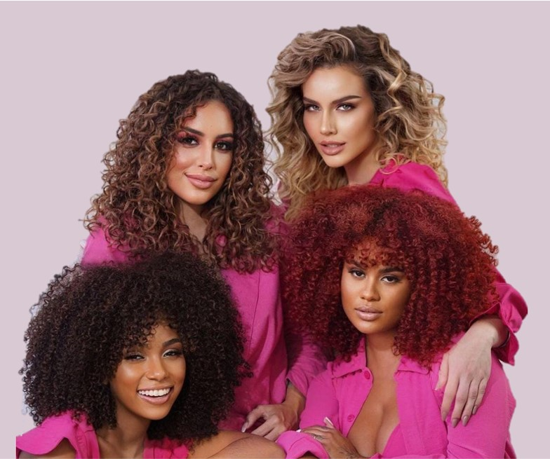
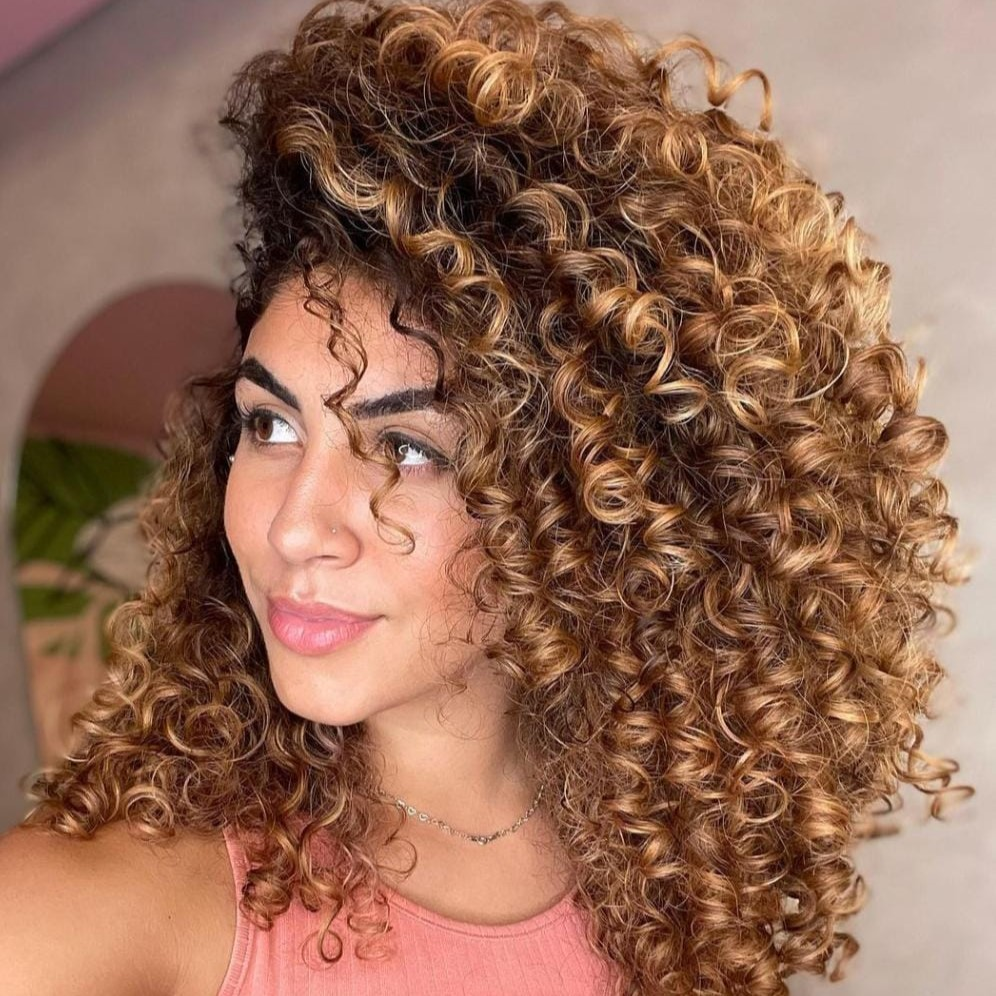
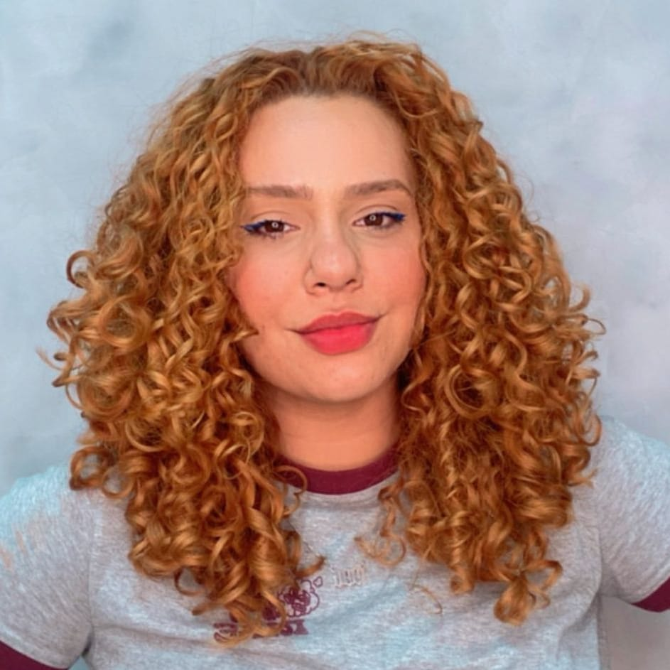

Dream Curly
Curly Care
Widi Care
Mari Morena
Apse Cosmetics
Abela
Kah noa
Beto-bita
Se o seu cabelo é cacheado/crespo e não produz óleo, é seco naturalmente, a umectação ajudará a manter os tratamentos nos fios
O uso dos acessórios de cetim ajudam a evitar o frizz, fazendo com que a finalização dure por tempo maior
Quando se passa creme todos os dias sem ter lavado o cabelo, os fios podem ficar hidrofóbicos, ou seja, o excesso de produto cria uma "capa" que não permite a penetração dos tratamentos (hidratação/nutrição/reconstrução) no cabelo, e com o tempo isso poderá trazer danos.
Acontece o mesmo que foi citado acima
Dependendo da necessidade dos fios ou das características naturais de alguns cabelos, os "potões" e produtos de mercado podem não entregar o que
prometem na embalagem. Isso pois esses produtos possuem quantidades baixas dos ativos que tratam o cabelo e por isso seu valor é mais baixo.
A analogia do achocolatado:
Ao fazer dois copos de leite com achocolatado, no primeiro será colocado o 200ml de leite e apenas 1 colher de achocolatado, no segundo será colocado 200ml de leite
e 10 colheres de achocolatado. O segundo ficará mais concentrado e devido a utilizar mais quantidade, ao longo do tempo sairá mais caro. O mesmo acontece em relação aos preços dos produtos
e suas concentrações de ativos. No primeiro momento em que se usa esses produtos o cabelo fica com brilho e macio, pois possui outros componentes mais baratos que só "maqueiam" e não tratam.
Mas calma! Não é necessário gastar uma fortuna com produtos, as marcas indicadas no começo da página são acessíveis e tem uma durabilidade muito maior
do que os "potões". Se fizer as contas do quanto gastaria mensalmente com os potões e quanto gastaria com os produtos de maior qualidade, a diferença não será absurda.
o motivo
A penetração dos agentes ativos dos alimentos in natura no fio de cabelo é muito fraca, ou nenhuma, devido ao tamanho grande de suas moléculas. A indústria cosmética investe em uma tecnologia de cargas elétricas, quebrando o tamanho das moléculas de seus componentes para que haja uma estabilização dessas cargas dos fios. Com o tamanho adequado das moléculas, é possível que o ativo penetre as mais profundas camadas. Além do mais, é necessário tomar cuidado pois a maioria dos ingredientes das receitas caseiras além de não tratar, podem danificar o cabelo devido ao ph e as gorduras dos mesmos.
Bianca Hulmann é especialista em cabelos naturais, e criadora do método Bianca Hulmann, além disso possui uma marca própria de produtos recentemente lançada.

Julia Vieira é uma especialista em cachos com diversos cursos no currículo, seu perfil é repleto de dicas e indicações

Talita Nascimento é uma especialista em cachos com diversos cursos no currículo, seu perfil é repleto de dicas e indicações

Tamires Maia é terapeuta capilar, e especialista em cabelos naturais. E através do feed e dos stories é possível ver diversas dicas, indicações e sua rotina capilar.